JIRA Timetracker Plugin enables its users to log their working hours in a fast and easy manner. The plugin provides users authenticated to JIRA with a simple and easy-to-use interface to manage their worklogs. By means of the plugin, worklogs may be created, modified or deleted.
Login
To use the plugin, it is necessary to log in to JIRA. After authentication, the plugin can be found amongst the Jira menu items by the name of Timetracker.
Timetracker plugin interface and input fields
After clicking on the Timetracker menu item, the plugin interface appears. The interface consists of different parts: the date modification part, the worklog total part, the worklog table part and the input fields.
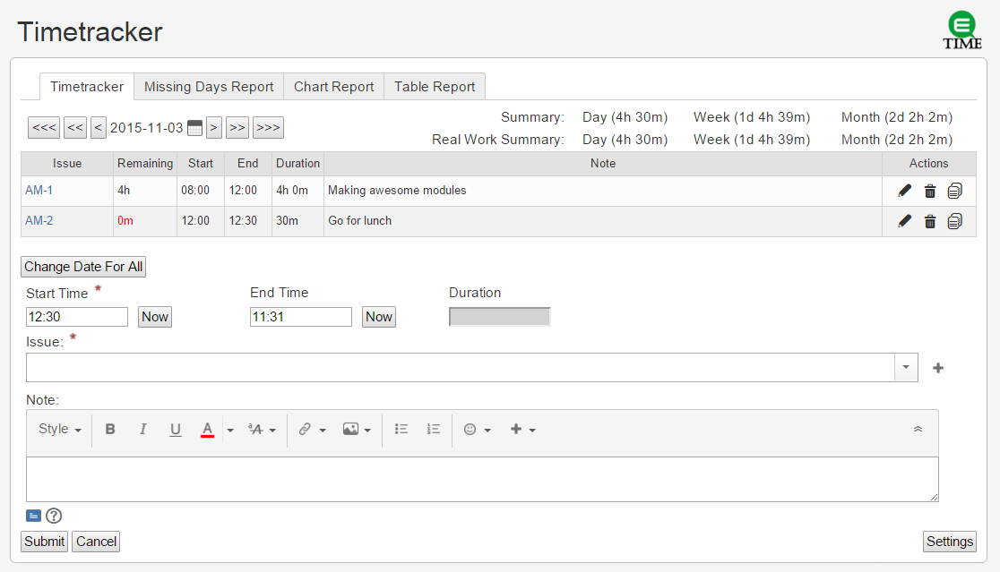
Date modification
Based on the user settings, there are more options to modify the date. The pop-up calendar and the tools to modify the date can be found in the top left-hand corner. It is possible to increase or decrease the date with units of time (day, week, month). Besides, a date can be chosen from the pop-up calendar also. The inline calendar can be found below the worklog table on the right-hand side of the input fields block. The settings make it possible to use both types of calendars simultaneously.
The Calendar highlights funtion
The calendar coloring function has been extended. The exclude dates shows like weekend (colored with red). The other months weekend fonts is colored to pink. The dates that include worklog now appears with yellow background.
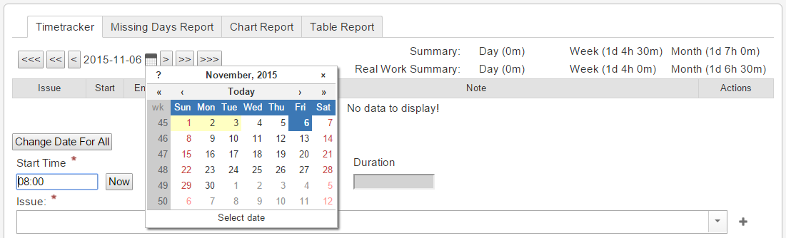
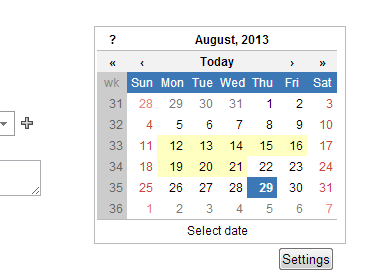
Worklog total
The worklog summary can be found in the top right-hand corner and it can be viewed in JIRA format ( d h m) broken down to a given day, week or month. In the case of a given day, the summary is created from 00:00:00 to 23:59:59. In the case of a given week, the summary is created from Monday 00:00:00 to Sunday 23:59:59. A monthly summary is created from the first day of the month 00:00:00 to the last day of the month 23:59:59. The worklogs related to actual work are summarized below the worklog summary. This Real Work Summary contains only the time spent with actual work based on the worklogs that are not related to non-working issues. The Real Work Summary uses Jira format (d h m) to display the daily, weekly and monthly summaries.
Worklog table
In the worklog table, the worklogs belonging to the given day can be viewed. A row belongs to each worklog. The table has the following columns:
- Issue - Issue code to which the worklog belongs. If the pointer hovered above the isseId, the issue description will appear. By clicking on it, the issue can be viewed. Next to the issue code a red exclamation mark appears if it is not closed and if there is no more estimated time assigned to it. If the issue is amongst the non-estimated ones, then the exclamation mark does not appear.
- Start - Start date of the worklog. Its format: hh:mm.
- End - End date of the worklog: Its format: hh:mm. Duration - Duration of the worklog; the time between the start and the end date in JIRA format (d h m).
- Note - Description of the worklog.
- Edit - It contains an Edit button. After pressing it, the given worklog can be edited.
- Delete - It contains a Delete button. After pressing it, the given worklog is deleted.
- Copy - It contains a Copy button. After pressing it, the given worklogs Issue and Note field are copied to the Input fields.
The worklogs are ordered by the start date. If no worklog belongs to the given date, then the “No data to display!” message appears under the table header.
The input fields can be seen in the bottom of the page. These fields are used when editing worklogs.
- Edit All - It may be used to edit the worklog of a whole day. By means of this option, all the worklogs assigned to a specific date can be reassigned to another one. You may read more about the Edit All function under the Edit Worklog menu item.
- Start Time - Start time of the worklog. Required! Its format: hh:mm. Its default value is 08:00, however, if there are worklogs belonging to the given day, then its value equals the end date of the last worklog.
- Pressing the Now button first, the current time can be set as a value. Pressing the Now button second and third times the button rounding function will round the time with the setted values first up then down.
- Issue - The issue to which the worklog will belong. Required! The field can be filled in in two ways:
- Typing the issue code in the field. The autocomplete function of the issue field will display the issues the user viewed already based on the typed text.
- By clicking on the cross beside the issue field, the users can select one of the issues they viewed most frequently.
In the issue field there are more issues listed but it is always the first one that is selected. Issues can be removed from the input field by clicking on the X next to them.
- End Time - End time of the worklog. It is optional, but either the End time or the Duration field has to be filled in. Its format: hh:mm. Its value is the current time by default. The value of the end time cannot be smaller than the start time.
- By pressing the Now button first, the current time can be set as a value.Pressing the Now button second and third times the button rounding function will round the time with the setted values first up then down.
- Duration - Duration of the worklog. It is optional, but the End time or the Duration field has to be filled in. Its format: hh:mm or Xh XXm. The value cannot exceed the value of 24:00-Start Time.
- Note - The worklog description can be given in the note field. By default the default note is “Default worklog description!”. The note input field handles the text formatting annotations.
Text formatting help
The Issue and Note field can be copied from the Worklog table by clicking one of the worklogs appropriate cell. With this technique you can also copy the Start and End time field but in that case the values will be switched. This can be useful when you want to fill a hole between two worklogs.
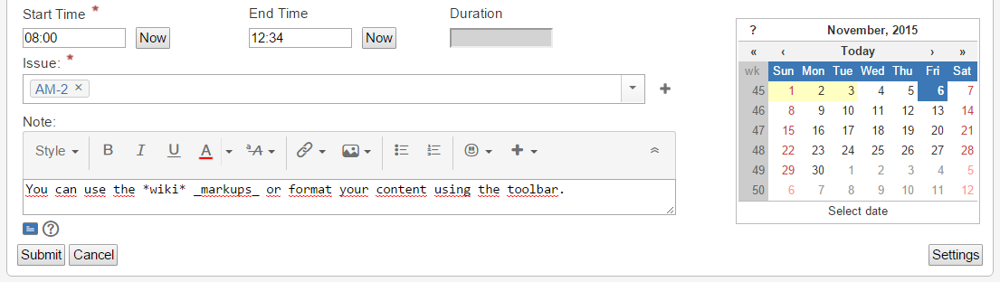
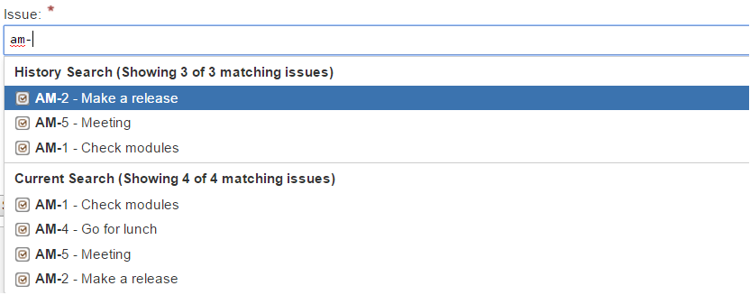
Create Worklogs
A worklog can be created by appropriately filling in the necessary input fields and clicking on the Submit button. Then, the worklog will be displayed in the worklog table.
Edit Worklogs
Worklogs belonging to a particular day can be edited. To do so, in the worklog table, the Edit button after the worklog needs to be pressed. After pressing the button the worklog data are displayed in the input field where they can be modified. The changes can be saved by pressing the Save button replacing the Submit button. The input field values are obliged to the same criteria as in the case of worklog creation. If one of the fields does not meet the requirements, an error message is sent and the changes do not take effect. Editing can be cancelled by pressing the Cancel button.
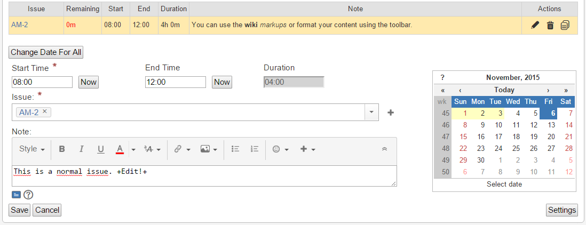
Edit All function
The Edit All button can be found below the worklog table, and it can be used to edit all the worklogs assigned to a particular day. In this case, only the date of the worklogs can be changed. After selecting the desired date, one may save the worklogs by clicking the Save button. At this time, the worklogs will no longer be assigned to the previous date. The edit procedure can be cancelled by pressing the Cancel button.
Delete Worklogs
Worklogs belonging to a given day can be deleted. To do so, in the worklog table, after the worklog the Delete button needs to be pressed. Then, the worklog is deleted from the table and the system as well.
Settings
The plugin customization has multiple levels. Some settings depend upon a particular person (usually appearance related settings). Others affect all the users of the plugin (administrator settings).
User settings
The settings may be saved by means of the Save button. By clicking the Reset button, the foregoing settings can be restored. If the user selects the Cancel button, then he is redirected to the Timetracker page. In this case, none of the changes will be saved.
Calendar appearance
Users may set up the appearance and the start date of the calendar. The appearance types of the calendar are listed below:
- Popup - Popup style calendar placed above the worklog table.
- Inline - The calendar is placed next to the input fields.
- Both types of calendars - The calendar appears in both places.
The start date of the calendar may also be defined. There are two options to do this:
- Current Date - The current date will be set up as the default value.
- Last Unfilled Date - Returns the oldest blank day of the past week by default. if each and every day is logged appropriately, then the current day is returned. When determining the oldest blank day, the plugin considers the list of exclude and include dates.
The calendar highlights function can be turned on and off.
Input fields settings
This part of the settings the StartTime field and the EndTime field Now button rounding function can be configured. In both cases the rounding rate can be a predetermined value. The acceptable values are 5, 10, 15, 20, 30 minutes.
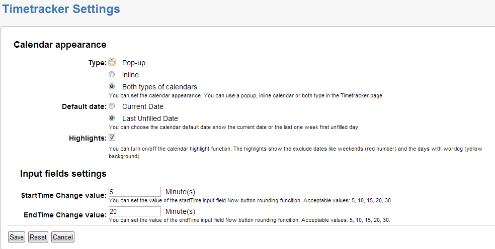
Global settings
The global settings are administrator settings and they manipulate how the plugin works.
Accessing the global settings
Global settings may be accessed only by the system administrators. The administrator can find the Global settings menu item on the Administrator page under the Plugins or Add-ons menu in the Timetracker submenu.
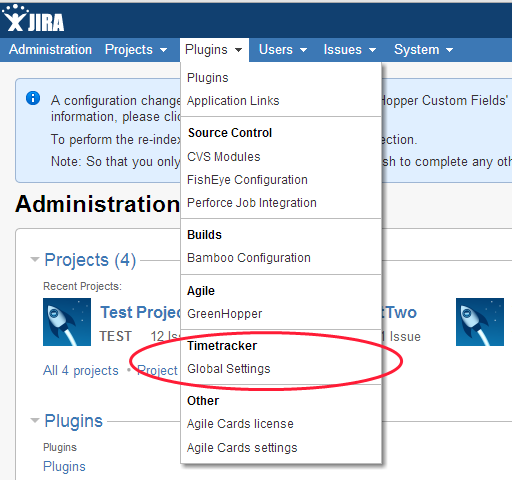
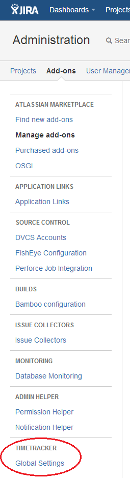
Non-Working issues
The administrator can define a list that may contain issue keys and regular expressions. This list will be the list of non-working issues. The issues listed here are ignored when creating the Real Work Summary. By default, the Non-Working issues list is empty.
Non-Estimated issues
The administrator can define a list that may contain issue keys and regular expressions. This list will be the list of Non-Estimated issues. The issues listed here do not trigger the appearance of the red exclamation mark and they are ignored when sending notification e-mails too. All the issues are non-estimated by default. This can be achieved by setting upf a .* regular expression. Example: To set up all the issues of MYPROJECT to be Non-estimated, the following regular expression needs to be used: “MYPROJECT-.*”.
Working days
By default, weekdays are working days and weekends are non-working days. The administrator can define the list of days that are exceptions to the rule; these lists are empty by default. The format of the dates is yyyy-MM-dd (e.g.: 2013-01-01), the separator character is “,”.
- Exclude date - List of those days that are working days by default, but they are not counted as such (e.g.: National Holidays).
- Include date - List of those days that are non-working days by default, but they are counted as working days.
Calendar
Unified calendar settings for all of the JIRA users.
- First day of the week - Sets the first day of the week for the shown Calendars in the Timetracker plugin.
The settings can be saved by pressing the Save button. The Reset button can restore the foregoing settings. By selecting the Cancel button, the user is redirected to the Administrator screen without making any changes.
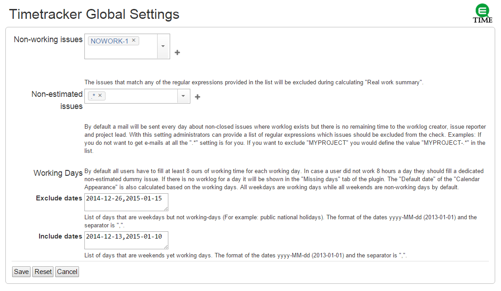
Missing Days Report
By the help of the Missing Days Report tab, all the days without assigned worklogs are returned between the given dates. The list displays 20 dates simultaneously. Further results can be viewed by the help of the paging buttons in the bottom. Clicking on a date in the list, one may navigate to the Timetracker interface of the plugin.
On the report page, the start and end date of the query can be chosen. The query is executed after pressing the Search button. The date in the From field is considered from 00:00, whereas the date in the To field is considered till 23:59. By default, the value of the From field is a date being a month earlier than the current date, while the value of the To field is the current date.
The report lists the days where the worklogs spent time is less than 8 hours. This report is available if the first checkbox is checked. An other options in this case if the query not exclude the non-working issues, for this type of query the second checkbox have to be checked. The second checkbox is blocked if the first one is not activated.
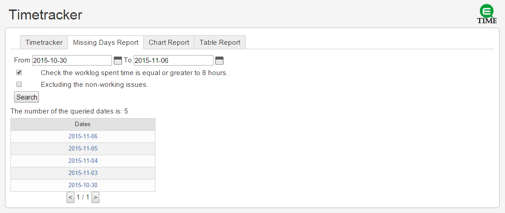
Chart report
By the help of the Chart Report tab, a pie chart is returned showing the logged work hours by projects between the given dates for the given user.
On the report page, the start and end date of the query can be chosen. Also you can select which users worklogs are you interested in. The query is executed after pressing the Search button. The date in the From field is considered from 00:00, whereas the date in the To field is considered till 23:59. By default, the value of the From field is a date being a week earlier than the current date, while the value of the To field is the current date. The default user is the currently logged in user. You can search for other users by typing in the starting characters of their username, full name or email address.
There is a permission check in the query, so you will only see those projects in the chart which you have permisson to browse.
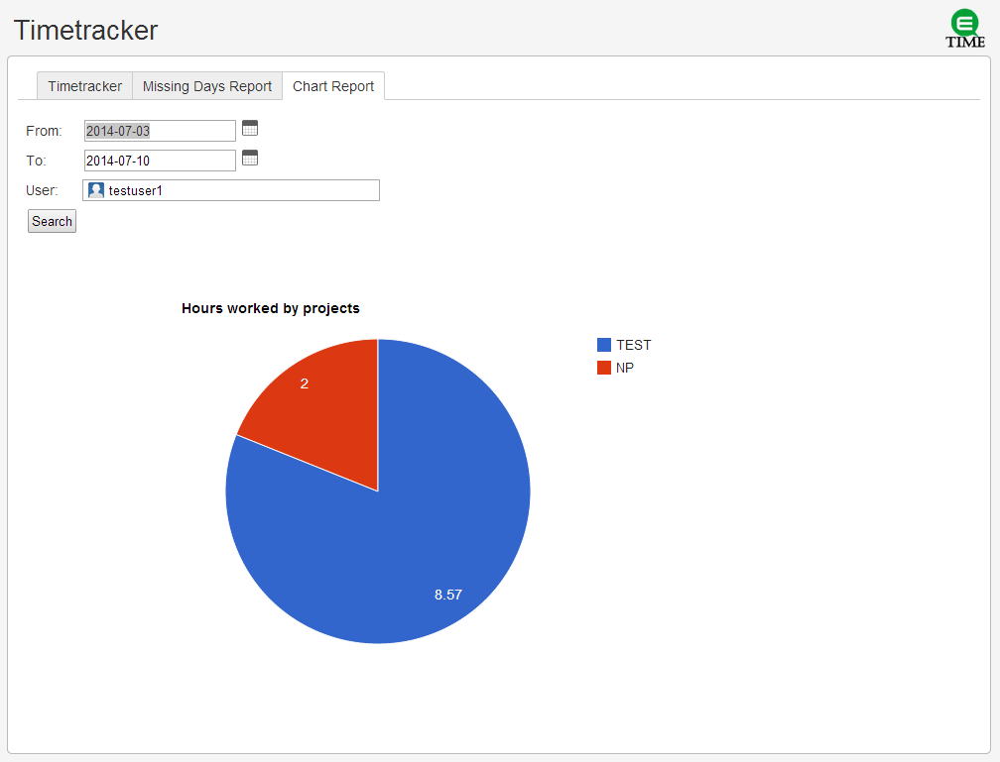
Notification email
By default, the plugin sends every day at 20:00 a notification email about the issues to which worklogs have been assigned if the estimated time of the issues is over and if the issues have not been closed. The notification email is delivered to the reporter of the issue and to the project manager. If multiple worklogs have been assigned to one issue, they have exceeded the Estimated Time and they have not been closed, then the plugin will send only an email. The plugin does not send emails about issues that are defined as non-estimated in the global settings.
Error messages
If the input fields are filled in incorrectly, the following error messages will be displayed:
- Time fields filled in erroneously:
- In case the start time is invalid: Invalid Start Time!
- In case the end time is invalid: Invalid End Time!
- In case the duration is invalid: Invalid Duration Time!
- In case the start and end times are given erroneously: Invalid Time Interval!
- Issue input fields and issue errors:
- In case of a missing parameter: Missing Issue Parameter!
- In case an issue key is given erroneously: Wrong Issue: issue-key
- In case of lacking permissions: You don't have permission to the issue: issue-key
- Error messages during creating, editing or deleting worklogs:
- In case of unsuccessful date processing: You can't parse the date: wrong-date
- In case of unsuccessful worklog creation: Unsuccessful worklog creation.
- In case of unsuccessful worklog update: Unsuccessful worklog update.
- In case of unsuccessful worklog deletion: Can't delete worklog with this ID: worklog-id
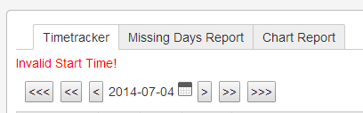
Release notes
Timetracker version 2.0.0
Changes
- In this version we changed the way of querying the worklogs from native sql to API calls. To do this with a satisfying speed we need a new view in the entity model called "IssueWorklogView" which is introduced in JIRA 6.2.5.
- Therefore this version is only available with JIRA versions above 6.2.5.
- From now on we will only develop the 2.x.x version of the plugin and no new features will be introduced in the 1.x branch
Timetracker version 1.3.0
Bugfix
- The inline calendar will no longer stay at the top of every screen.
- When you edited a worklog and made an invalid save action, the plugin changed to "Add worklog" mode, now it stays in "Edit".
Improvements
- The default Jira snytax (2h 30m) is now supported in the duration field. (#32).
- Added global setting to set the first day of the week in the calendar. (#22).
- The fields now remember their values when changing date or when form submission fails. (#13).
- So far the issue picker only offered cached issues but now it searches between all of the issues.
- The worklog currently being edited is now highlighted in the worklog table.
- The plugin now remembers which one of the EndTime/Duration fields was filled in before an invalid submit.
- Removed radio buttons from End Time and Duration fields, now you can select between them by clicking into the appropriate field.
New features
- Copy button to the worklog table to quickly select recently used issues with a single the click of a button (#17).
- Copy function to the worklog table by clicking the appropriate cell.
- Chart report page to return a pie chart showing the logged work hours by projects in the given time interval.
Timetracker version 1.2.1
Bugfix
- Fixed unresolved constraint issue (#25).
- Fixed an issue where 31th days of months with work logs were not highlighted in the calendar.
Timetracker version 1.2.0
Bugfix
- The tabindex value of the duration time input field has been fixed.
- The information typed in the input fields will no longer get lost when refreshing the browser.
- In the worklog notes, the \r\n characters are handled appropriately.
- JIRA 6.x compatibility fixed.
Improvements
- Worklog table issue column shows the issue description when hovering the mouse pointer over the Issue Key.
- Calendar highlights function. (Other months, weekend and days with worklogs.)
- In the specified interval, Missing Days Report checks day by day the number of working hours logged on working days. (Configurable.)
New features
- Rounding function on “End Time” and “Start Time Now” buttons.
Timetracker version 1.1.0
Bugfix
- More aesthetic Summary layout.
Improvements
- Real Worklog Summary added to Summary.
- Calendar appearance. (popup, inline, both)
- Default Calendar date. (Actual day or the oldest blank day of the past week.)
- Development of the worklog table. (In case the estimated time is over, a notification icon appears next to the issues.)
- Ergonomic layout of the input fields.
- Use of tabulators between input fields made easier.
- When editing a worklog, it is possible to modify the date.
New features
- Edit All function added to Timetracker.
- The Missing Days report returns the days to which there are no worklogs assigned between two given dates.
- By the User Settings, the appearance of the plugin can be customized. (e.g.: Calendar appearance, Calendar default date selection)
- By the Global Settings, administrators can configure the plugin. (e.g.: Non-working issue, Non-estimated issue, Exclude date, Include date)
- Daily notification email sending. (Based on the worklogs created on a specific day and on the remaining estimated time)
Timetracker version 1.0.0